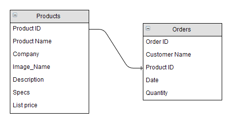
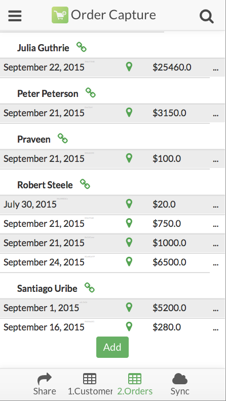
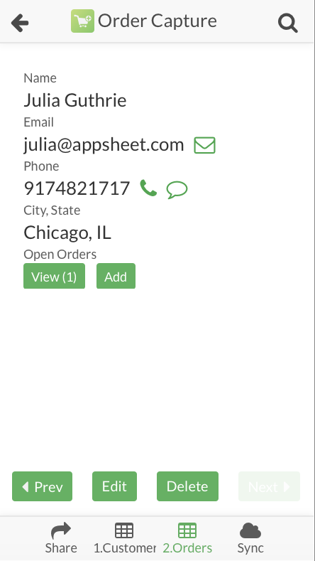

Once you have an app with multiple spreadsheets it's useful to create connections or "References" between the sheets and slices.
Columns with a Ref column type always point to the Key field in the table they are referencing. If you need other columns besides the reference key field, consider using a De-reference (See Expressions).
A reference example, the Order Capture sample app has a spreadsheet of products in inventory and a separate spreadsheet of orders. The products spreadsheet is kept up to date with all the products in the warehouse and when someone buys a product a new row is added to the orders spreadsheet.
The problem is when a new order is created, the product information from the products spreadsheet has to be manually copied into the orders spreadsheet.
This is a great place to use References. Since each row in the orders spreadsheet has one product, we can add a column with the product id to the orders spreadsheet. This connection between the spreadsheets will be used a in few different areas of AppSheet to make your app much more convenient and powerful.

Creating references
AppSheet will automatically create references between tables if there is a column name that contains the name of another table in your app, followed by the name of a column in that table. For example if you have a Customers table that has a Name column, another sheet that has a column named Customer Name will automatically be a Reference when the row is added.
Otherwise, you can create and modify references manually using the Advanced Editor by setting the Field Type of a column to Ref and putting the name of the spreadsheet to reference in the ReferencedType field.
Using references
Appsheet will automatically turn References into links that you can select to navigate to the referenced record.

Additionally any record that is linked to will have a View and Add button.

Selecting the View button will show a list of items with the matching Reference. In this case it will show the product in this order.
Selecting the Add button will open a form to create a new order with this product.
Refs as views in the app
If you'd like to see a graph, map, or customize the view that you are taken to when selecting View, you can create a new View in the Advanced Editor>UX.Views tab and set the Position to ref.